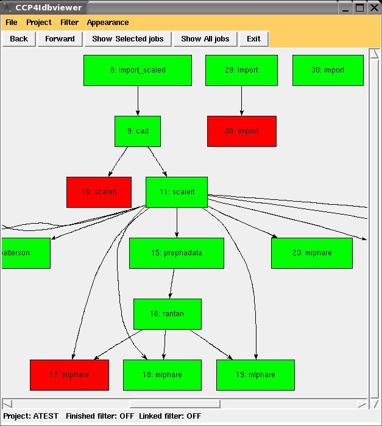

December 20th 2006
Wanjuan Yang
CCP4i Database viewer is a standalone client application of db handler. It can display the job history of a CCP4i project in graph view. Based on the fact that files output from a job could be the input for another job, the visualiser shows the flow of files between jobs, thus shows how the jobs are related to each other. The visualiser provides tools to allow users to select part of the jobs which he/she is interested in to view. The jobs information are shown in the node label, bubble help box and the color of the nodes.
The following is the screenshot of the db viewer:

Running viewer requires three components:
Viewer: This includes modules viewer.tcl, dotgraph.tcl, dbClientAPI.tcl,dbxml.tcl.
DB handler: This includes modules dbccp4i.py, ccp4i.py, DBcommand.py, manager.py.
CCP4i project database: This is the project database database.def file created from ccp4i.
Before running viewer.py, you must set up environment variable DBCCP4I_TOP and CCP4I_TOP. To do this, run the set up file dbccp4i.setup and ccp4.setup.
To run the viewer, you could type:
wish viewer.tcl PROJECTNAME
The visualiser will load the given project.
Or you could simply type:
wish viewer.tcl
In this case, the visualiser will load the first project of the existing projects.
Existing projects are listed in the Project menu. By selecting one you can change directly to a new project and see the jobs displaying in the window.
The viewer provides tools to select jobs that user wish to view. There are a couple ways that perform selection of jobs.
User can use different selection tools mentioned above to select jobs to view, each time when user click 'show selected jobs', the db viewer will remember the selected jobs. User can use 'Back' & 'Forward' button to step backwards or forwards to the selections.
Filter can be applied on top of the selection of jobs. The Filter menu has two different filters: one is only show Finished jobs. In this case all failed jobs will be filtered out. The other filter is only show linked jobs. All single jobs which are not related to any other jobs will be filtered out. This two filters can be applied seperately or at the same time. Note that the db viewer doesn't remember the result of filtered jobs. So the 'Back' & 'Forward' button doesn't apply for the filtered jobs.
When the mouse point to the job node a bubble help will appear. It shows jobs title, date, input files, output files.
The job nodes are shown in different colors based on the status. The jobs with 'FINISHED' status are shown in green color. 'FAILED' jobs are shown in red. 'RUNNING' jobs are shown in yellow.
The db viewer is listening to the db handler, if there is a broadcast message telling there is a change in database (e.g. when the job status changes from 'running' to 'finished'), the viewer will automatically update the view.
The appearance menu provides choices of background color of the window, line color of the arrows and the orientation of the view.
The 'File' menu 'Output graph' allows user to output current view in a file in different formats, e.g. gif, ps, jpg, png etc.
The 'File' menu 'Output xml' allows user to output the jobs information in current view to a xml file. file
Last Update: $Date: 2008/08/12 10:48:16 $